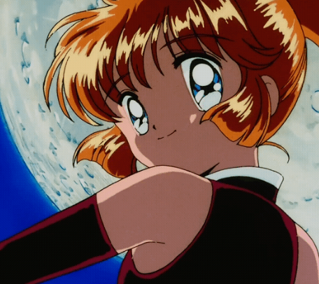
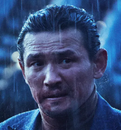

2부
캐릭터 재판 티어메이커
만약 이 캐릭터가 현실에서 재판을 받는다면? — 한국 형법 기준 티어 분류
📋 출연진 응답 부탁드립니다
아래로 스크롤하면 32명의 캐릭터가 나옵니다. 각 캐릭터에 대해 안다 / 좋다 / 모른다 중 하나를 선택해주세요.
· 안다 — 알고 있는 캐릭터 · 좋다 — 꼭 다뤘으면 하는 캐릭터(희망) · 모른다 — 처음 보는 캐릭터
모두 선택하신 뒤 페이지 맨 아래 "결과 제출" 버튼을 눌러주시면 됩니다.
기획 배경
기획 포인트
① 형량 갭 논쟁 — 무잔은 당연히 사형, 그런데 이타치는? 베지터는? "동기가 있잖아" vs "학살은 학살" 같은 의견 충돌이 핵심 재미.
② 경범죄 믹스 — 살인급만 있으면 전부 사형~무기에 몰림. 짱구·둘리·케빈 같은 가벼운 케이스가 있어야 하단 티어가 살고 완급조절이 됨.
③ 정상참작 토론 — "세계를 구했으니 감형" vs "법 앞에 평등" — 코난, 마석도, 스네이프 등 선 위에 있는 캐릭터가 토론 시간을 만듦.
구성 밸런스
극악범 5~6 / 중범죄 7~8 / 경범죄·애매 7~8로 티어 전체 고르게
인지도 기준
두 분 다 아는 캐릭터 50%↑, 나머지는 한 분이라도 아는 캐릭터
티어 7단계
부관참시 → 사형 → 무기징역 → 10년↑ → 5년↓ → 벌금 → 훈방
논쟁 설계
"동기·맥락 참작" vs "행위 자체 판단" 양쪽 다 가능한 캐릭터 다수 배치
32
전체 후보
20~25
최종 선발
7
티어 단계
부관참시
사형
무기징역
10년형 이상
5년형 이하
벌금
훈방
전체 후보 목록 (32명) — 응답해주세요
1

야가미 라이토데스노트
데스노트로 대량 살인. 정의라는 명분으로 신세계의 신을 자처. FBI 요원 살해, L에 대한 조작·협박·살인교사 등 죄목 풍부.
사형~부관참시
2

키부츠지 무잔귀멸의 칼날
1000년간 인간을 귀신으로 만들고 장기 살상. 부하에게 공포 복종 강요, 인간 사회 위장 침투해 가족까지 만든 가스라이팅·조직 통제 끝판왕.
부관참시
3

애니 레온하트진격의 거인
여성형 거인으로 조사병단원 학살, 간첩 임무 수행. 마레 전사 후보 맥락으로 정상참작 논쟁 가능한 회색 지대 캐릭터.
10년↑~무기
4

아마미야 히카리H2
히로와 히데오 사이에서 선택 없이 양쪽 감정을 소비하는 어장관리형. 명백한 범죄보다 예능 판결용 케이스, 훈방 티어 환기 역할.
훈방~벌금
5

우치하 이타치나루토
쿠데타 방지를 위해 마을 명령으로 일족 전원 학살, 동생 사스케만 살려둠. "명령이면 면책이냐" vs "학살은 학살이다" 토론 가장 잘 붙는 핵심.
무기~감형 논쟁
6
히소카헌터×헌터
강한 상대와 싸우기 위해 무차별 살인. 곤·킬루아 등 미성년자에 성적 집착. 죄목은 무겁지만 판정 싸움이 재미있는 타입.
10년형 이상
7
유바바센과 치히로의 행방불명
이름을 빼앗아 정체성 지우고 강제 노동. 미성년자 고용, 부모를 돼지로 만들어 협박. 착취·사기·가스라이팅 복합, 중간 티어 밸런스용.
10년형 이상
8

쇼우 터커강철의 연금술사
국가자격 유지를 위해 아내, 친딸 니나와 반려견을 합성수로 만든 혐오 캐릭터. 죄질과 분노 최상위급, 부관참시 자동 배치 후보.
부관참시
9

베지터드래곤볼
프리저 군 소속으로 수많은 행성 멸망, 지구 침공 시 민간인 학살. 이후 아군화·결혼·육아로 갱생. "갱생 감형 어디까지?" 핵심 토론.
무기~10년↑
10

히로카와 시장기생수
기생생물에게 시청 일자리 주고 인간 포식 묵인. "환경을 위해 인간이 줄어야"라는 논리로 직무유기·직권남용·살인방조 복합.
10년형 이상
11

이카리 겐도에반게리온
14세 아들 신지를 전투병기 파일럿으로 강제 투입, 아내 부활을 위해 인류 도구화. "아버지로서의 재판" 프레임으로 아동학대 논쟁 특화.
무기징역
12

에도가와 코난명탐정 코난
모리 코고로에 무단 마취침 수백 회(상해), 신분 은폐 + 수사권 남용. "탐정 허용 범위 어디까지?" 논쟁과 웃음 동시 유발.
벌금~5년↓
13
.png)
짱구 (노하라 신노스케)짱구는 못말려
공공장소 하반신 노출("코끼리~"), 주거침입성 장난과 각종 민폐. 만 5세 형사미성년. 분위기 환기용 하단 티어 필수.
훈방~벌금
14

네티천사소녀 네티
천사이면서도 의적처럼 절도를 반복. 동기는 선해도 기본 절도. "좋은 목적의 범죄도 범죄인가" 하단 티어 가벼운 토론용.
벌금~5년↓
15
둘리아기공룡 둘리
고길동 집에 무단 입주, 냉장고 음식 상습 소비, 기물 파손. 주거침입+재물손괴+무전취식 콤보. 한국인 공감도 높은 필수 하단.
벌금~5년↓
16

바쿠고 카츠키히로아카
데쿠에 수년간 물리적·언어적 폭력, "죽어라" 발언. 학폭·폭언·위협 강하지만 성장 서사 있음. 성장 감형 논쟁용.
5년형 이하
17
슈퍼아줌마추격자 · 단군 추천
《추격자》 작품 인지도는 있으나 캐릭터 단독 인지도 낮음. 단군 추천 후보, 방송 중 단군이 직접 설명하는 내부 밈 효과.
10년형 이상
18

한니발 렉터양들의 침묵
고급 요리로 위장한 식인 연쇄살인범. 수사 협조도 결국 자기 유희, 탈옥 시 간수 얼굴 벗김. 변명 여지 없는 부관참시 기준점.
부관참시
19
용석부산행
자기 생존을 위해 타인을 좀비에게 밀어넣고 문 열도록 강요, 감염 확산. 사실상 살인미수·강요·유기, 분노 유발력 높은 대표 악역.
무기~사형
20

테렌스 플레처위플래쉬
음악학교 교수로서 의자 투척·인격 모독·정신적 학대, 제자 자살 유발. "천재를 만들기 위해" 명분. "교육인가 학대인가" 토론 특화.
5년↓~10년↑
21
아귀타짜
손가락 절단 등 잔혹한 폭력·협박, 조직적 도박판 조작·운영. 죄목 명확하고 한국 영화 대표 악역, 중형 티어 깔끔 배치.
10년형 이상
22
타노스어벤져스: 인피니티 워
인피니티 스톤으로 우주 생명체 절반 소멸, 역대 최대 학살. "균형" 철학 있으나 수조 단위 학살은 법 환산 불가. "사형도 부족 vs 신념범".
부관참시
23
진도준재벌집 막내아들
주식 조작·기업 승계·미래 정보 우위 활용 등 경제사범식 해석 가능. 범죄성 애매하나 "재벌이면 집행유예" 현실 풍자 포인트 강함.
벌금~5년↓
24
박연진더 글로리
고데기로 피해자 피부 지지는 극단적 학폭, 성인 이후에도 살인·은폐·권력형 가해. 죄질 강하고 대중 분노 포인트 확실, 사형~무기 구간.
사형~무기
25
조커다크나이트 / 폴리 아 되
병원 폭파, 페리 인질극, 조직적 테러로 도시 혼란. 동기 없는 파괴라 상위 티어 기준점. "폴리 아 되" 포함 시 심신미약 논쟁 추가.
부관참시
26
상연은중과 상연
집착 관계에서 무단침입·상대 고립·심리적 통제 반복하는 스토킹형. 무단침입·가스라이팅형 후보, 인지도는 출연자에 따라 갈릴 수 있음.
5년↓~10년↑
27
.png)
짱구바람의 파이터
학교·거리에서 상습 폭력 일진. 소년법·폭력·일진 문화 현실형 범죄 후보. 13번 짱구와 이름 겹쳐 방송 중 혼선 주의.
5년형 이하
28

세베루스 스네이프해리포터
덤블도어 살해(본인 요청), 죽음을 먹는 자 가담, 학생 정신적 학대. 그러나 이중첩자로 볼드모트 패배에 공헌. 이타치와 함께 정상참작 논쟁 핵심.
10년↑~감형
29

마일스 쿼리치 대령아바타 시리즈
판도라 원주민 학살·생태계 파괴·나비족 납치. 명령 수행 맥락 있으나 개인적 복수심으로 범위 크게 초과. 캐릭터명 인지도 낮을 수 있음.
무기~사형
30

일광곡성
무당 행세로 마을 사람 속이고, 일본인 저주 행위 방조·공모. 곡성 특유의 해석 모호함으로 공포영화식 애매한 재판 논쟁 적합.
10년형 이상
31

케빈 맥칼리스터나 홀로 집에
주거침입 강도에 페인트통·다리미·못·화염 등 살상급 트랩 설치. 정당방위 vs 과잉방위 토론 잘 붙음. 하단 티어 환기 필수.
훈방~벌금
32
마석도범죄도시
범죄자 때려잡는 강력반 형사지만 체포 시 뼈 부러뜨리고 차 부수는 등 과잉진압 상습. 폭행·기물파손·공권력 남용. "나쁜 놈 때렸으니 OK?" 논쟁.
벌금~5년↓
응답 진행: 0 / 32